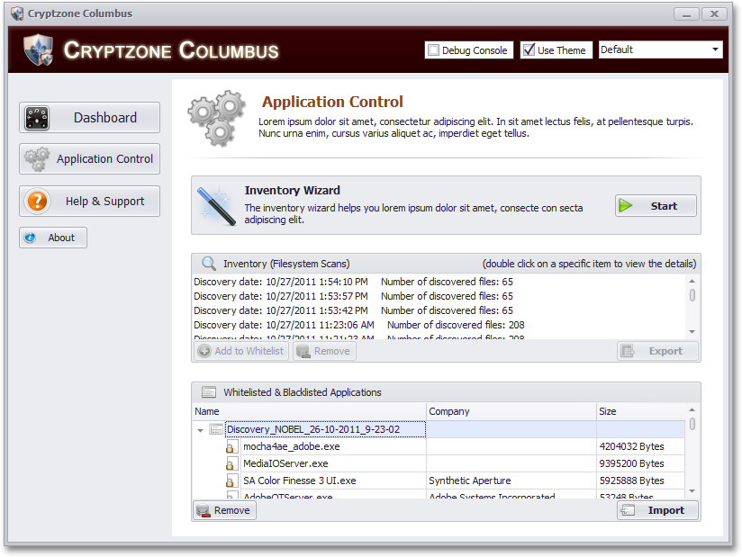
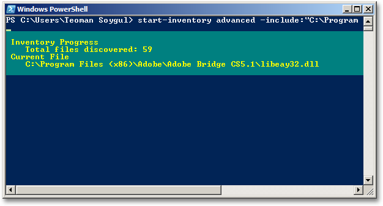
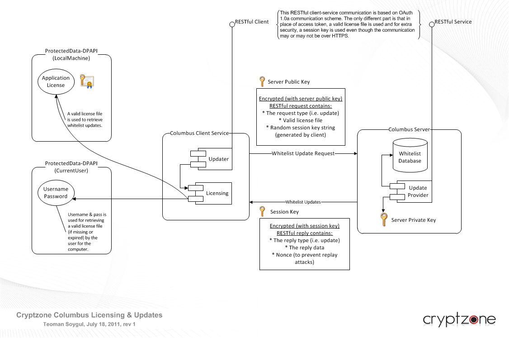

At Cryptzone AB, I was initially involved in a project code named Columbus. With a team of five, 2 for kernel driver, 2 for management server, I was in charge of developing the client agent ground up. This agent, as you will see, provides application control and whitelisting capabilities to the installed computer. With remote management features, this is a new product targeted at enterprise markets with unmatched features, thanks to extensive use of .NET Framework, in both the client agent and the management server. It has a state of the art 4-tier architecture with a Windows service which enforces computer security policies, and 3 different user interfaces; GUI, CLI (Console), and PowerShell to interact with the service via IPC, thanks to the utilization of MVC architecture. It also uses the most current technologies ranging from Windows Communication Foundation (WCF) 4.0, Entity Framework 4.2, SQL Server Compact (SQL CE) 4.0, to tools like Ninject (for DI), NUnit + Moq (for TDD), and countless more. With heavy emphasis on SOLID principles, this project marks a milestone for Cryptzone, and for me. Read on to learn more about the solid architecture and technology of this great new project.
Columbus essentially is an application control solution with the paramount reliability and manageability. To provide these qualities, separate client agent, management server, and cloud services are provided. Client agent is the package that is installed on every machine that application control and whitelisting policy is to be enforced. Management server acts as a central management console for all separate clients on the same network. Finally, the cloud services provide updates for common trusted application and publishers list. With a personal or freeware license, the client agent can also be used without the management server, directly giving the control to the end user while still providing to cloud services. The rest of this article will mainly concentrate on the client agent architecture, as I've designed it ground up.
To achieve ultimate reliability, Columbus uses 4-tier application architecture. The bottom layer is a Windows service that keeps all the application control policies in a SQL Server Compact (SQL CE) 4.0 database, using Entity Framework 4.1. This service has four major functionalities. First, aforementioned duty of keeping the policies in an embedded database, as safe as possible using all the possible protection mechanisms includes database encryption, DPAPI, and more. Second, it communicates directly and securely with the application’s kernel level driver and keeps the driver’s policy cache in sync with the safe policy database. So even if the Windows service goes down (which is restarted automatically anyway), the kernel level driver continues to monitor and protect processes and files and enforce cached security policy. Thirdly, the Windows service communicates with the user interface process, which keeps the user informed of the current security status and other up-to-date information. This inter process communication is designed to utilize named-pipes via Windows Communication Foundation 4.0 net.pipe interface, which provides a secure and lightning fast communication channel. This clear separation of the Windows service process and the user interface process provides maximum availability, where the service continues to function even when the user interface crashes or when there is no user logged in. Finally, it connects to the central management server, from which the general security policies are distributed and managed by the system administrators.
While the Windows service ensures the computer security, the client agent application communicates with the service to provide the user some means to view/edit computer security policies, and all the related information. As seen from the given diagram, the client agent uses Model-View-Controller (MVC) pattern. With this approach, the client application is not only made more maintainable, but the users are also given to choice to use any view (user interface) they want. On top of the modal and controller classes, sit three view types: GUI, CLI (command console), and PowerShell Console. Each different view type is nothing more than a plugin to existing agent core package, thus easy to maintain and very extensible.
The security agent installed on the client computers need to be remotely managed, especially for enterprise environments. Application policies may need to be updated globally within an enterprise from a single point of administration. That side of business is handled by the Columbus management server. On the client side of things, the security agent should be listening for incoming queries and commands from the management server. This requires a very reliable yet very fast communication. This was a major problem, which I solved with a fabulous combination of Windows Communication Foundation and the Windows Server AppFabric. AppFabric extends IIS 7.5 and makes hosting of WCF services a breeze. As a bonus, all the performance and availability issues are handled automatically. Thus the client security agent communicates with the management server over WCF net.tcp interface, reliably and securely (using public key cryptography with valid certificates signed before the mass deployment of agents).
As it was mentioned, client security agents can still function without the management server, in personal use environment. In that scenario, the WCF services developed for management servers are reused, but this time utilizing the web.http bindings and hosted on Windows Azure AppFabric. Azure provides almost elastic scaling of web services, thus provides the basis for Columbus cloud services. Whenever possible, IPv6 is used by default for connections and NAT transversal / Teredo tunneling is enabled automatically, when necessary. As a bonus, the cloud services are RESTful, meaning that they can be easily consumed by many 3rd party applications, making Columbus project into a huge platform.
Columbus platform as a whole was made possible with the use of latest technology, and above anything, Microsoft .NET Framework. Since .NET provides the basis for developing web apps, web services, and desktop applications with the use of same set of tools, it was a natural choice for this project. Its excellent interoperability with native components (the kernel driver) over P/Invoke services makes it the almighty tool that we longed for. In addition, there are best of their breed 3rd party tools to further aid the development. First off, what gave the beautiful look to the current client agent GUI are DevExpress WinForms controls. They are skinable by default and come with tons of extra features, which users can adjust as they please. In addition, the client PowerShell console is provided as an alternative user interface, which is a simple PS 2.0 cmdlet developed with the use of System.Management.Automation namespace.
As per SOLID principles, all the programming is done against contracts and not concrete classes, and the dependency injection (DI) is done with Ninject inversion of control (IoC) container, facilitating unit and integration testing. Unit testing of the project benefits from the heavy use of Moq, for mocking the dependencies, which provides the ability to write heavily focused unit tests. It also paves the way for our test-driven development (TDD) methodology, with the help of NUnit. Since this is an n-tier application with a domain-driven design (DDD), many discrete domain models and data transfer objects (DTOs) are used, and they all are glued together smoothly, thanks to AutoMapper.
Finally the whole application is packed into an Windows Installer (.msi) package via WiX. The separate steps into building the whole project into an installer is taken care of with psake, a wonderful build automation tool written in PowerShell. I should also note that the complete application package is very well tested, thanks to VMware Workstation and its great integration with Visual Studio.
Columbus is differentiated from other players on the arena, with its distinct set of features. The manageability, extendibility, connectivity, and reliability are all part of this distinction. Above all, thanks to immense productivity that .NET Framework and C# programming language brought to the table, Columbus is extremely feature-rich. Even the desktop client agent is teaming with features that every security company would like to have in their tools suite. Ability to scan and whitelist file-system as a whole, ability to detect applications separately along with their related files and executables, global support for brandability are just a tiny fraction of these features.
Above development screenshot is just a preview of what has yet to come. With the inventory wizard, portions of the file-system can be selectively whitelisted, as well as discrete applications, software publishers, and according to other traits decided by the system admins. In addition, the ability to be centrally managed by the management server or ability to retrieve commonly trusted applications list from the cloud are just complements to this technology. Especially the application discovery technology is a well-tailored feature, which helps identify individual applications (i.e. Adobe Acrobat Reader) and whitelists every single file related to that application.
As it was mentioned earlier, one of the most eager features provided along the core package is the plenty of options provided for all sorts of human - machine interactions. There is the GUI, there is the command console, and there is the PowerShell console, and all of them are very easy to use. According to the customer feedback, it will be very easy to add even more interfaces, as required.
The licensing and updating services all benefit from public-key cryptography. In addition, these services are based on open standards. For instance all the update/licensing server (which are either integrated into the management server or the cloud service), to client communication is all RESTful. In addition, OAuth 1.0a (and 2.0 optionally) authentication scheme is supported, for the sake of 3rd party interoperability. Finally, the use of public-key cryptography for all licensing, management, etc. interfaces means that it will be very easy to integrate these services with the Active Directory in the future.
As of writing this article, Columbus client agent is only 3 months into the development process (and yes, I have created all these features in under 3 months!), so I cannot disclose the actual product name (Columbus is just the code name) or web site, yet. I will try to keep this article updated, and list all the related resources in this section, as the final product becomes available. Currently you can keep an eye on cryptzone.com/products where the Columbus platform as a hole will be available, once completed.
The Columbus project was expanded and renamed Cryptzone Platform to incorporate the entire product range into a single cloud based platform. You can read about the Cryptzone Platform project to get up-to-date information.